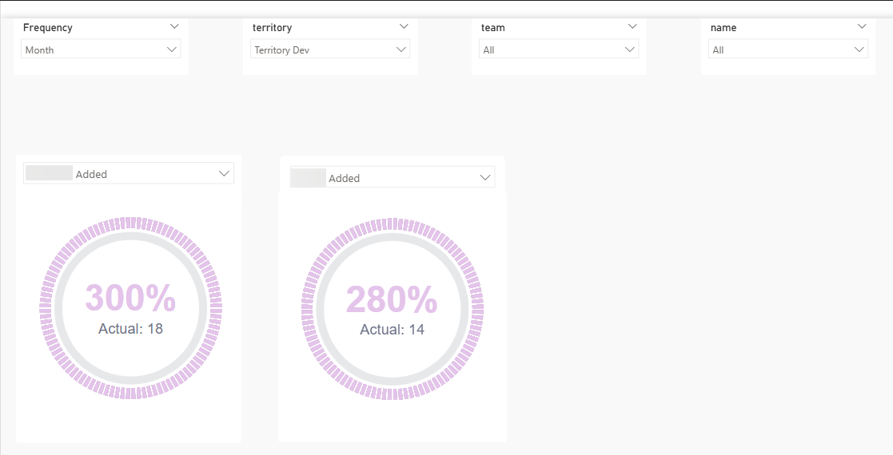
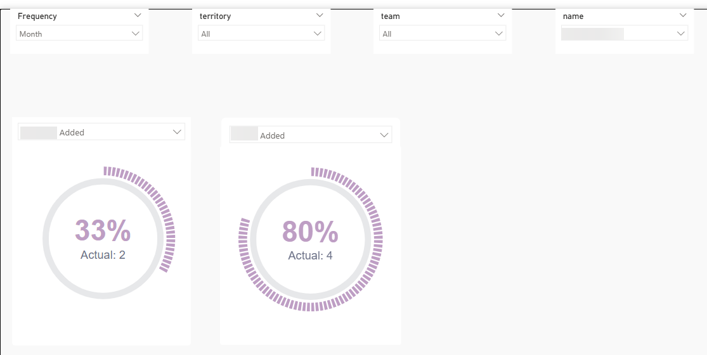

Context
This investigation was to look into what would be required and document the next steps for providing the ability to report on actuals vs target for key business metrics. This ability would be required at individual level, team/department level and also territory level.
We already had something like this in another reporting vertical so the intention is to build something similar using the same approach. Are there any issues with this? Can we re-use that same logic?
What follows is an example of a structured spike designed to assess feasibility, scope, risk and operational considerations before committing to delivery.
Problem
We have not yet built a SQL data warehouse for Vertical B. However we have been speaking about creating a report to show actual performance vs agreed target for key business metrics. Can this be built without SQL and what are the key considerations with any approach?
Background
In Vertical A we have built an actual vs target report to display at various levels of the hierarchy the achieved performance versus the agreed targets.
This report has been refined over various iterations and we want to explore whether a similar report to the original iteration of this report could be created for Vertical B. The desired output would be to know whether this is possible and if so, what the stumbling blocks might be or what we still need to work out.
In order to achieve this in Vertical A, the approach was as follows:
- Targets Added: Target values are added by user in the core system.
- Targets imported into Analytics: This table of targets is imported into the data warehouse. It contains all targets against all appropriate entities for all users.
- Tables used for Actuals also imported:The underlying entity tables are also imported into the data warehouse. As these tables are used to calculate the 'actuals'.
- Calculations defined: Measures are then created to:
- calculate the target for a given entity.
- calculate the actuals for a given entity.
- compare the actuals against the target.
- Control flow logic implemented: Finally, control flow measures are also created to take the context of the KPI from the user selection and return the correct actual and target based on this KPI.
So we need to find out whether this can be replicated essentially using Power Query in place of SQL.
Approach
While I could create dummy KPI targets in the target table in core, it would be time consuming to also create 'actual' records in the underlying tables. And without the knowledge of what would represent or define 'key' metrics, it was decided that this wasn't a good use of time.
Instead the approach was taken to use existing KPIs from Vertical A to act as example KPIs to prove out the concept.
Outside of Scope
The current iteration of the report in Vertical A includes being able to see historic performance against target. We are not interested in historic performance for this task. For what it's worth, I believe this would require a SQL backend to achieve.
Methodology
The ask can be achieved by using Dataverse as a direct source and hooking up Power Query. In more detail, the approach is as follows:
1. Connect To Core
Create a Power Query which uses core as the source. I used my usual Microsoft credentials to access this.
2. Import Tables
Import the relevant tables from core to Power Query / Power BI.
3. Transform the Data
Make the necessary transformations in the Power Query Editor to create a star schema (so dimension tables and fact tables) and load the tables into Power BI.
4. Create the Data Model
Create a data model in Power BI for analysis where we have one-to-many relationships going from the dimensions to the fact tables just created.
5. Create the Necessary Measures
Now we have the data in Power BI and have created the relationships, we just need to replicate the measures we created in Vertical A.
With this methodology I was able to simulate a couple of dials showing actual performance against target for a couple of different KPIs at a couple of different hierarchies


Summary
With the assumptions listed above in mind, the ask can be achieved relatively straightforwardly using Power Query to firstly hook up to Dataverse directly to pull in the data and secondly transform that data before loading to Power BI.
Some things to bear in mind:
Definitions
We will need a list of the core tables required to be imported so we can calculate the metrics defined as actuals in each case. We will also need clear unambiguous definitions of what an "actual" is, for each of the KPIs we will be looking to make available in the report.
Production
I'm uncertain of the address for the production version of core so we would need this before progressing this and the relevant credentials to access. Although perhaps this is already known as has been used previously within the existing Vertical B suite?
Connection to Production
It is never a good practice to hook up Power BI direct to a live production transactional system. This is because data requests sent from Power BI will increase network traffic to the system which could block genuine users of core or at least slow down their queries. So we need to be mindful of quantity and timing for the refreshes.
This comment is slightly mitigated by the fact that I believe we connect to production for the rest of Vertical B reporting so I'm assuming any issue this has caused with latency would have been reported and investigated by now.
Data Transformation Complexity
Depending on the data transformation(s) required, Power Query can slow down if there is a lot of data and / or the transformations required are row by row or complex in some other way. I can't see this being a problem as, for actuals and targets, I'm expecting the transformations required to be straightforward.
Report Filters Required
It wasn't 100% clear to me exactly which slicers we would need to be able to accommodate in this proposed report. The three in the PoC (territory, team and consultant) all come from the same core table and so are easy to implement. While not a showstopper at all, if we require slicers which originate from other source tables this will make the development more complicated.
Breaking New Ground
The PoC was fairly easy to set up as it was a case of copying the logic used in Vertical A. More thought and therefore more time will probably be required when setting this up for key business metrics. In particular I can see the implementation of the transformations required in Power Query (and ideally ensuring they are reasonably efficient) and writing the measures that need to be created could take some time.
What Happened Next?
This investigation was subsequently superseded when the team decided to take on the task of migrating the back end away from Power Query to a SQL data warehouse for this vertical.